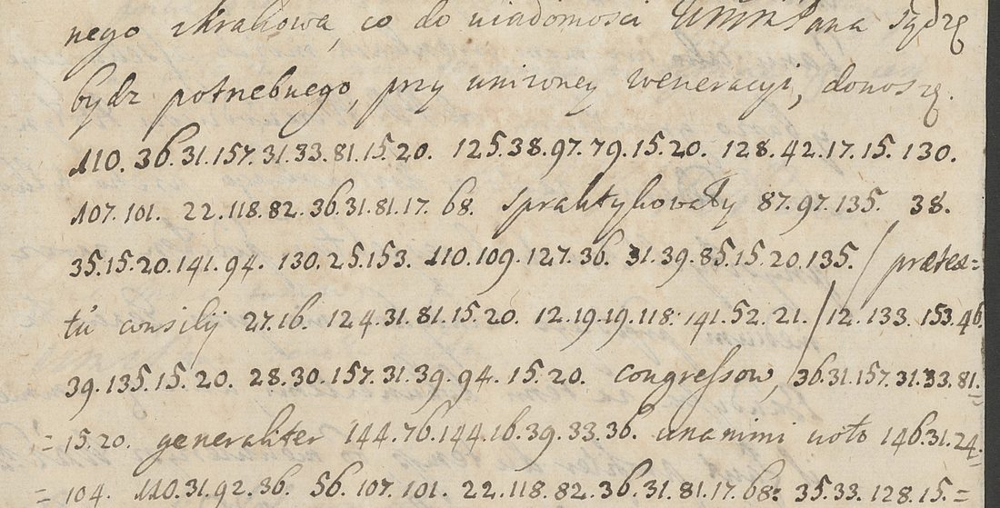

. Wikimedia Commons, public domain.")
At a glanceNot solved · 0 of 232 cipher figures
- The letter
- Józef Wandalin Mniszech, Grand Marshal of the Crown, to Jakub Dunin, Crown regent, from Dukla, 18 March 1714. Clear Polish with Latin phrases, the sensitive words in figures.
- Where
- Archiwum Narodowe w Krakowie, Archiwum Sanguszków, ASang_teka_290/6; DECODE R7524, catalogued with the date 16 March 1714.
- The cipher
- 232 figures from 12 to 157, 77 different values, written word by word with dots inside a word. Its design is not established.
- How it was tried
- Homophonic annealing with Polish language models, with and without word boundaries, cribs, a period dictionary, and the Sanguszko key records. No stable key.
- Why it resists
- 232 figures in 77 values is too little for the solver: a synthetic Polish text of the same size and design was recovered only to 21%.
- Still open
- The whole cipher. A stronger solver or more of Mniszech’s cipher letters is needed.
This letter was filed in the Sanguszko archive, and on this site until 14 October 2026, with Barbara Potocka’s nine letters to the same Jakub Dunin; hers are in a different cipher, with their own page.
01The letter

The heading reads 18 marty 1714, w Dukli; DECODE gives 16 March. DECODE names the sender “Mniszech J[ózef], m[arszałek] w[ielki] k[oronny]”, the Grand Marshal of the Crown, and the receiver “Dunin Jakub, regent koronny”. The letter opens with eight lines of clear Polish, then alternates cipher words with clear Polish and Latin ones: praetextu consilii, congressow, generaliter, unanimi voto, Rempublicam, iest plus quam certum, correspondencye, tractantur. They suggest a report on a council or congress and the affairs of the Commonwealth, but they decipher nothing.
02The cipher
Re-read at full resolution on 5 October 2026, the cipher has 53 words, 232 figures and 77 distinct values between 12 and 157. Dots join the figures of a word, a gap separates words, and an equals sign joins a word across a line end. Four words are a single figure (12, 38, 56, 133). Some words recur: 22.118.82.36.31.81 four times (twice followed by 17.68), 36.31.157.31.33.81.15.20 twice, 144.76.144 twice. Doubled figures occur (12.19.19.118, 27.28.28.119). These features would fit a homophonic letter cipher that keeps word division, but that design has not been shown.
The system is not Barbara Potocka’s. Her alphabet runs 14–39 with doubled homophones (25 and 50 = e); shifted by −40 to +40 or scaled by 1 to 4 it fits nothing here.
03What was tried
- 23 September 2026: homophonic annealing scored with a Polish five-letter model (the shared
pl-modern), a tentative crib hetmanow, a hypothetical null 33 with 130 = ch, and a search penalised towards Polish letter frequencies. No coherent text. The crib values are not key material. - The three key records of the Sanguszko collection on DECODE: R7515 (a numerical alphabet, a = 5/10/15, two series) and R7460/R7461 (graphic signs). None fits.
- 5 October 2026: annealing that uses the writer’s word boundaries, scored on
pl-modernand on a period model built from Jan Chryzostom Pasek’s memoirs and Gutenberg Polish, with and without the cribs. No convergence. - 5 October 2026: dictionary-word annealing over a 49,000-word list. 34–36 of the 53 words land in the dictionary, but every restart gives a different key: at 232 figures and 77 values the search is underdetermined.
04Why the failure is inconclusive
A synthetic Polish homophonic text of the same length, 232 tokens, with a comparable alphabet (75 signs) was given to the same solver. It recovered 49 of 232 positions (21.1%). A solver that cannot break a known text of this size proves nothing about the letter: it does not show that the cipher is homophonic, or that it cannot be broken.
05What remains
- All 232 cipher figures. No key and no plaintext of this cipher are known; the attacks above do not converge and the control fails.
- Transcription: the older flat file reads 30 at figures 46 and 201 where the word-divided file reads 36; on the image figure 46 is 36. Figure 201 is to be re-checked.
- What would help: a solver that recovers the 232-token control, or more of Mniszech’s cipher correspondence of 1713–14. The archive lists further Dunin correspondence of 1713–18 (unit 29/637/0/1.3/9477) without scans.
06Sources
- Archiwum Narodowe w Krakowie, Archiwum Sanguszków, ASang_teka_290/6: DECODE R7524 (three images).
- Related correspondence: 29/637/0/1.3/9477, catalogued without online images.
- No earlier decipherment was found in print or online; that does not prove none exists.
Research notes, transcription, solver scripts and the control.